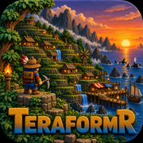

TerraformЯ
Offline 2D world · Godot 4.7.2 web build 0.5.1 TEST (playtest) · runs entirely in your browser · no install, no account, no key
About 60 MB, loads once per visit. Needs WebGL 2. Keyboard and mouse recommended.
visitors – · downloads – (browser plays – · native –)
The game runs locally: the page never sends anything about your play. Saves stay in this browser.
Licenses (Godot Engine MIT and third-party) · BOTLATCH · BOTLATCH Exchange · Mint tracker · DRAGON SKULL in browser